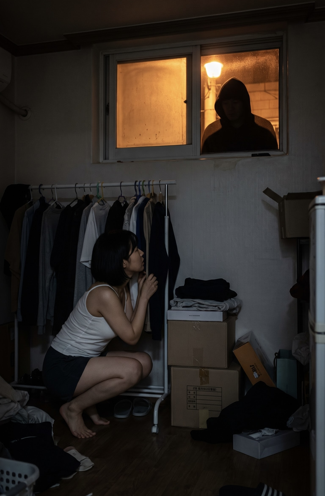
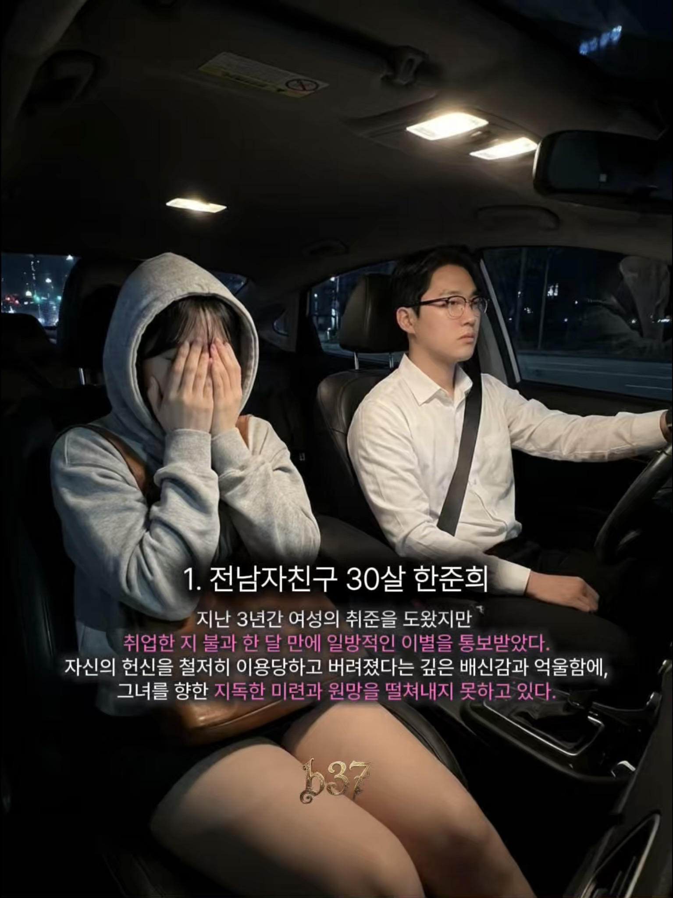
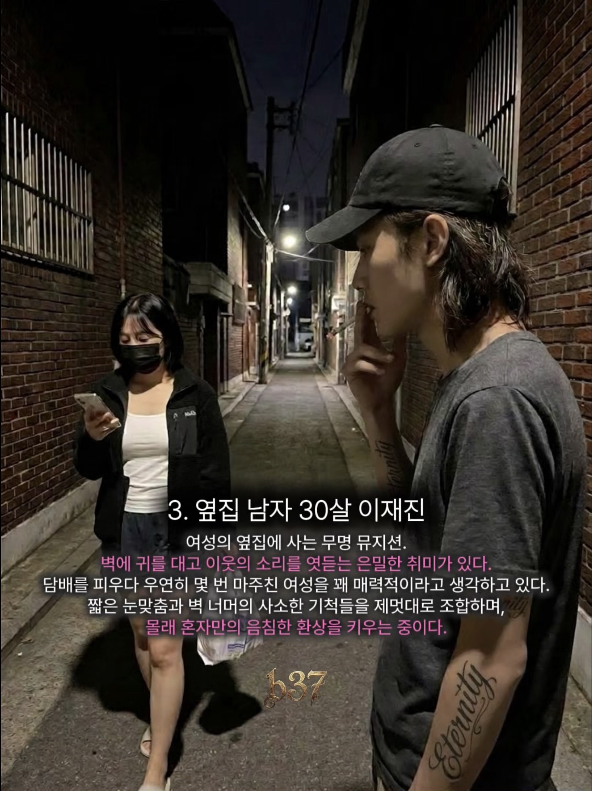
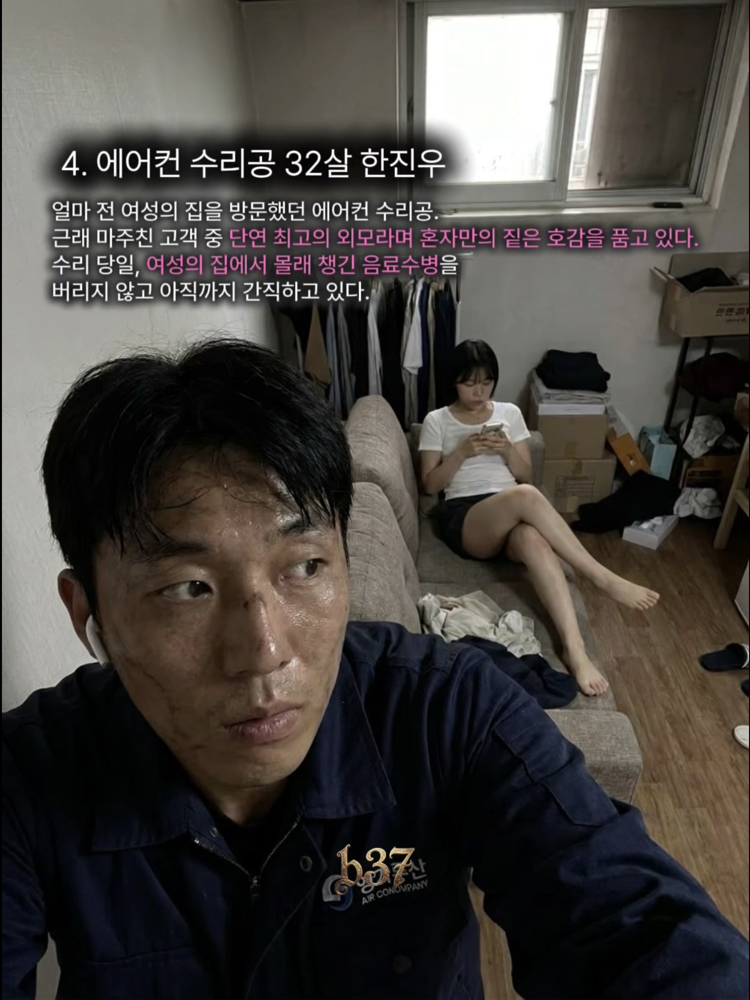

당신의 마음 가장 깊은 곳, 지하 37층
어둠 속에서 마주하는 진정한 자아
당신의 마음 가장 깊은 곳, 지하 37층
탐구할 에피소드를 선택하세요
당신의 마음 가장 깊은 곳, 지하 37층
깊은 새벽, 서늘한 기분에 눈을 뜬 당신.
창밖의 인기척에 본능적으로 몸을 숨긴다.
반지하 창문 너머, 어둠 속에서 집 안을 엿보는 한 사람.
숨소리조차 낼 수 없는 당신을 찾아온 불청객은 대체 누구일까?




해석
조언
당신의 마음 가장 깊은 곳, 지하 37층
납치범을 피해 가까스로 내려온 낯선 마을.
도와달라는 나의 외침에 마을 사람들이 하나 둘 나타난다.
한 명을 제외한 이들 모두 납치범과 가까운 관계라는 예감이 든다.
오직 내가 믿을 수 있는 단 한 사람은?

해석
조언